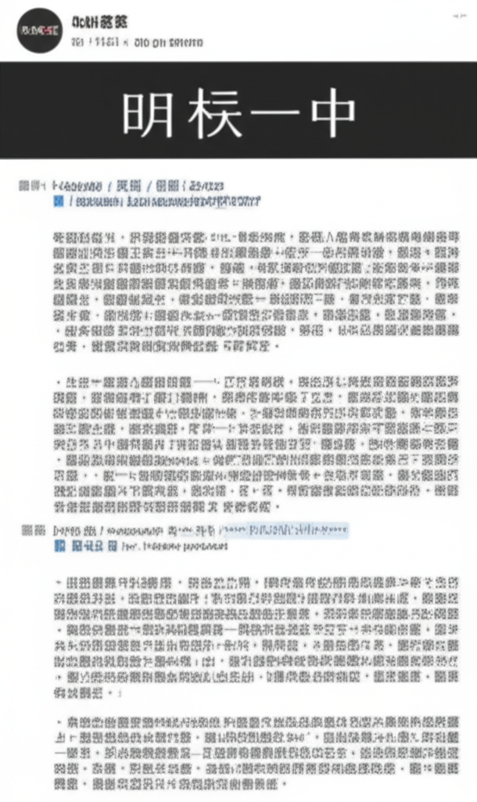

近期健康與新聞焦點：高血壓、肺動脈高血壓與疫情
引言
近期新聞與健康資訊聚焦在高血壓、肺動脈高血壓，以及持續的新冠疫情威脅。從台灣到全球，各個媒體平台都強調了疾病預防的重要性，以及早期發現、及時治療的必要性。高血壓的預防與控制、肺動脈高血壓的早期辨識，以及新冠疫苗的接種，都成為公眾健康議題的關注焦點。
主體內容
高血壓的預防與控制
- 年輕化趨勢： 澳廣視新聞指出心血管疾病年輕化，強調定期測量血脂血壓的重要性。新聞中提到，許多人不知道自己患有高血壓，宣傳教育至關重要，建議醫生與社工向市民普及相關知識，及時控制血壓。
- 生活習慣的影響： 微博上的央視新聞提到，一名高血壓患者因未規律服藥，加上長時間使用電子產品，導致血壓控制不佳。這凸顯了生活習慣對於血壓控制的重要性。
- 飲食控制： 世界新聞網提到黑橄欖雖然具有抗衰老和緩解更年期不適的功效，但也提醒高血壓患者應控制鈉攝取量。MSN新聞也報導台灣一年有3萬人腦中風，強調從飲食做起預防心血管疾病及腦中風，特別是高血壓的預防。
肺動脈高血壓的早期辨識
- 症狀辨識： 大紀元和中央社CNA報導指出，手指、腳趾與嘴唇偏黑可能是原發性肺動脈高血壓的徵兆。強調了早期辨識症狀的重要性。中央社CNA報導的標題明確點出“黑指甲嘴唇非龐克風恐原發性肺動脈高血壓”，提高公眾警覺性。
新冠疫情的持續威脅
- 疫苗接種的重要性： 南投縣政府衛生局的新聞稿指出，新冠疫情升溫，呼籲民眾儘速接種疫苗以獲得保護力。這顯示了即使在疫情進入相對穩定期，病毒威脅仍然存在，疫苗接種仍然是重要的防護手段。
結論
綜觀近期新聞，高血壓、肺動脈高血壓以及新冠疫情仍然是重要的健康議題。預防勝於治療，透過健康的生活方式、定期檢查、及時就醫，才能有效降低疾病風險，維護自身健康。對於高血壓，應重視飲食控制、規律服藥與定期測量。對於肺動脈高血壓，應注意早期症狀，及時就醫。對於新冠疫情，疫苗接種仍是保護自己的重要方式。公眾應提高健康意識，積極採取預防措施，共同維護健康。